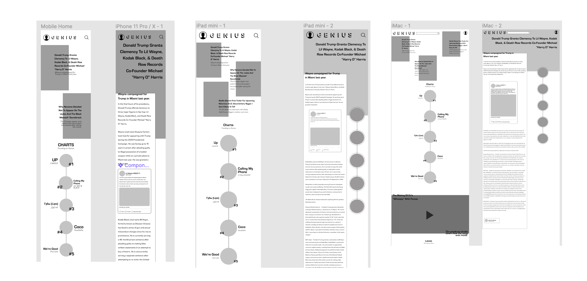

Genius is a site dedicated to music. The site goes in-depth into divulging the meaning behind lyrics, songs, and albums, along with news related to music.
For this class, the goal was to redesign a news-related website's UI using the mobile-first approach and atomic design. Starting from determining the atoms, to creatinging a page, I redesigned Genius's mobile, tablet, and desktop home page and an article page.

I started my research for this project by reating a content hierarchy, and looking into Genius' current brand identity to see what their design system is like.

Based on this research, I decided that my animations would be focused on the top 5 chart that is displayed on the home page. This is to add some dynamics to the home page, which is currently quite static. My next focus was on developing a user persona:
To gain insight into the performance of the current site, I used heuristic analysis. I asked a user to rate different functionalities such as task orientation and navigation on the current site using a scale of 0-4:

The search bar is small and hard to find, and the navigation bar only leads to places on the home page. There is no spot for finding song lyrics specifically on the home page, and the menu bar does not help. Based on the results from this evaluation, I decided to focus on organizing the homepage, task orientation, and navigation.

The atoms in my design consisted of the main colors I had chosen, typography, and box styles for different elements.
Here is what the atoms and molecules look like, before getting combined into organisms:
After determining my atoms and molecules, I was able to start putting together wireframes for the mobile, tablet, and desktop view. These wireframes were made using the organisms that I had created previously.
After my mid-fidelity wireframes had been finished, I created hi-fidelity wireframes from it. I then started the second half of my research: doing another heuristic analysis. With a different user, I went through the same questions and scale but with my redesigned prototype instead. The results were such:

After determining what worked and what was out of my control, I was able to get a better grasp of what I needed to change in my final prototype.
My final step was to refine and add new interactions between breakpoints. As my heuristic analysis showed that my prototype had succeded in compensation what was lost in the original, I believe that the final product was a success.